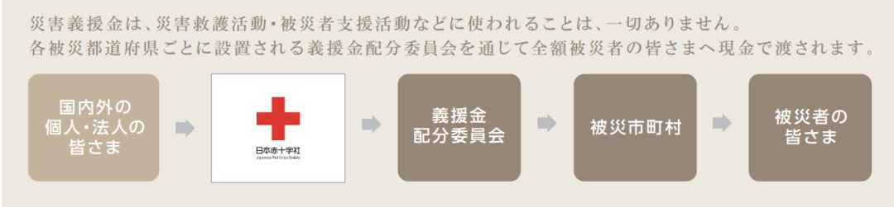
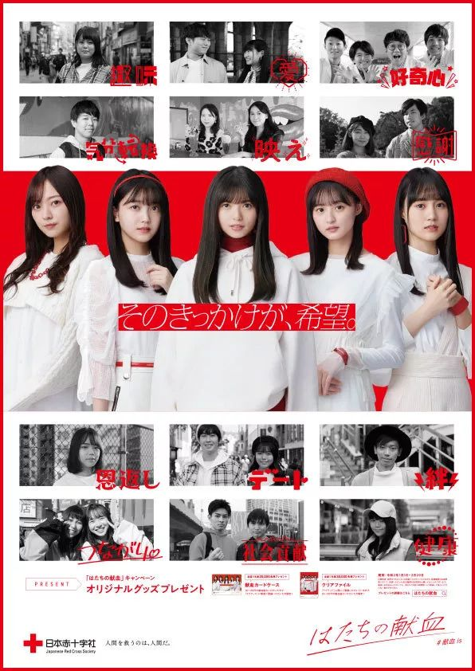
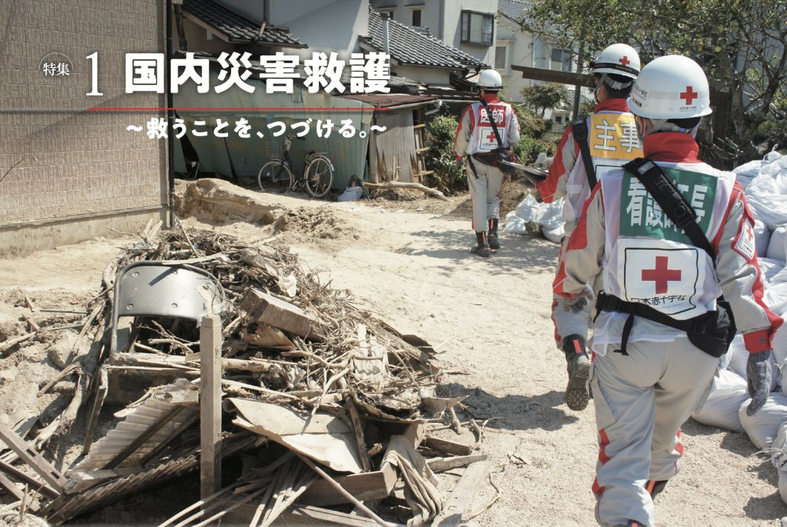
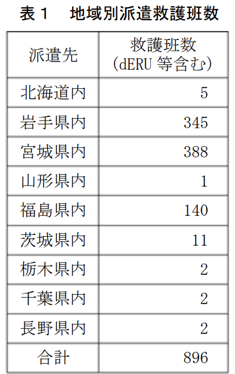
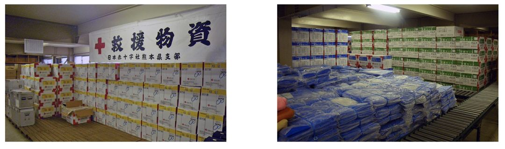
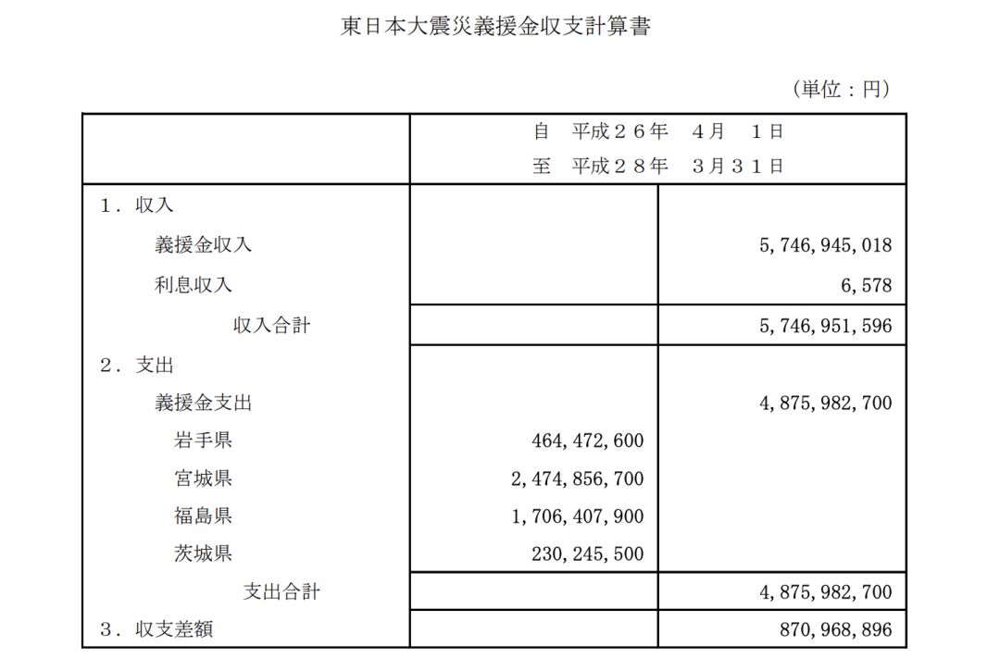
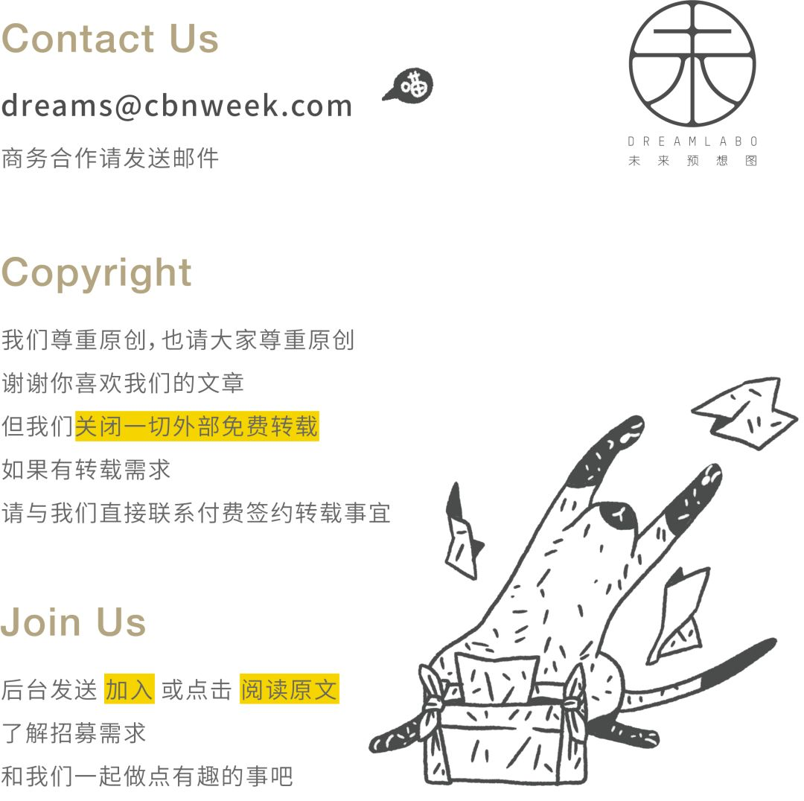

【口述】驰援武汉的上海货车司机：7桶泡面伴我送物资｜疫中人②|界面新闻 · 中国
原文链接 备份链接 李克胜在武汉。图片来源：受访者供图 口述 | 李克胜 整理 | 汪畅 44岁的上海货车司机李克胜，义务承揽运送医疗物资前往武汉的工作，带着7桶泡面，独自踏上千里之路。 返沪后，他马不停蹄，再次踏上赴汉之旅。 他曾接到妻 …
近年来，大型自然灾害给日本带来重大影响，日本红十字会也在不断摸索、积累经验，以建立适应需求的运营管理模式。红十字会也需要“专业化”。

△ 日本红十字会的宣传海报，其推广口号为“拯救人类的，仍是人类”。图片来源 | 日本红十字会官网
在日本，一旦灾害发生，日本红十字会会在 48 小时内派出专业医疗救援团队，并开放善款募捐。募集到的善款通过第三方全额发放给灾区民众，不收取任何手续费。
在日本红十字会运营管理经验中，我们梳理了十件你可能不太了解的事，帮你了解日本红十字会如何专业运作。
1. 日本红十字会也不属于红十字国际委员会。
日本红十字会接受日本厚生劳动省（类似我们理解中的“卫生部”）管理，在法律上，与日本银行、核能损害赔偿・废炉等支援机构等组织一起，都属于基于某种特别法律及政府许可的“认可法人”。历届名誉总裁均由皇室成员担任，目前名誉总裁是皇后雅子。
针对红十字会架构，有很多混乱的理解，网络上所说的“中国红十字会不属于红十字国际委员会”，则是最早对《纽约时报》一篇文章中所述事实的误读，因为没有任何国家的红十字会属于红十字国际委员会。
想要弄清红十字会的组织架构，我们可能要先提及一个概念：“国际红十字与红新月运动”，这是一个国际性的人道主义运动，有三个组成部分，分别是：
① 红十字国际委员会（International Committee of the Red Cross，简称 ICRC）：一个建立于瑞士的私人人道机构，主要职责是保护武装冲突和其他暴力局势受难者的生命与尊严，并向他们提供援助。“国际”并不是成员资格或者组织级别，而是根据《日内瓦公约》界定的它的活动范围。它在全球 60 多个国家设有代表处或事务所，在全球约 80 多个国家展开活动。红十字国际委员会没有任何“成员国”，与各国红十字会都不存在隶属关系。
② 红十字会与红新月会国际联合会（International Federation of Red Cross and Red Crescent Societies，简称 IFRC）：一个总部设在瑞士的国际人道主义组织，也是全球最大的以志愿者为基础的人道网络。负责协调各国家协会的活动，在灾难和卫生紧急事件发生前、发生时及发生后满足人们的需求并改善脆弱人群的生活。在国际层面上，该联合会与各国家协会密切合作，领导和组织大规模紧急救援。一般而言，一个国家只有一个国家协会。中国红十字会与日本红十字会都是红十字会与红新月会国际联合会（IFRC）成员。
③ 各国红十字会与红新月会（这两个组织共同简称为“红会”）：国际红十字与红新月运动的工作和原则通过 192 个国家红会（截至 2019 年 12 月）得到体现。国家红会是各国政府在人道领域开展工作的助手，在救灾、卫生和社会等方面提供广泛服务。战乱时期，国家红会会援助受影响的平民、居民，并在适当时侯为军队医疗服务机构提供支持。
2.日本红十字会负责募集善款，但分发靠的是另一个专门机构。
日本受灾时，灾区所在红十字会支部负责募集善款，并通过单独设立的“善款分配委员会”将善款以现金的形式全额（包括银行利息）分发给当地灾民，不收取任何管理费或手续费。
“善款分配委员会”制度始于 2011 年东日本大地震。当时由于受灾情况复杂，在厚生劳动省的协调下，学界有识之士、灾区政府和包括日本红十字会在内的善款募集团体组成“善款分配决定委员会”，根据受灾严重程度确定善款分发标准。除了红十字会募集到的善款，其他地方政府、公益组织和媒体机构筹集的善款也被统一交予地方政府，由各个都道府县设立的“善款分配委员会”分发，灾民可凭借相关证明直接领取。

△ 日本红十字会等组织募集善款后，善款会通过分配委员会全额分发给受灾群众。图片来源 | 日本红十字会官网
随着捐款金额的增多，灾民领取的金额也会逐渐增加。截至 2020 年 1 月，熊本地震善款已经分发 43 次。对于灾情严重的地区，善款募集可能持续多年。对日本东北地区的善款募集仍在继续。

△ 熊本地震受灾善款在分配时，根据灾情与不同损伤程度确定分配标准。图片来源 | 《日本红十字会业务报告（2016-2017）》

△ 熊本市社会福祉协议会的网页上，有日本红十字会熊本市地区总部的页面，这张海报是为红十字会熊本县支部成立 125 周年所绘，主人公是高举着红十字的熊本熊。图片来源 | 熊本市社会福祉协议会
3. 日本红十字会日常运营不动用灾区善款。
日本红十字会承诺绝不使用捐给灾区的定向善款，其运营成本主要依靠会费与社会捐款，以及各项国家补贴，这些收入被计入“一般会计”种类。
会费是日本红十字会的主要收入来源之一，每年捐款不少于 2000 日元（约合 128 元人民币）即可成为会员。截至 2019 年 3 月 31 日，日本红十字会拥有 14.1 万名个人会员和 7.6 万名法人会员。
△ 为庆祝 2019 年 5 月“红十字运动月”，日本红十字会在 YouTube 发布了一支募资广告短片，解释日本红十字会的工作，号召人们成为捐赠会员。
2018 年度，日本红十字会的“一般会计”收入总计约 349.7 亿日元（约合 22.4 亿元人民币），全部用于支持日本国内外各种灾害应对费用（包括活动与物资等），以及开展日本国内救援训练、志愿者活动与灾害复兴支援活动，日本红十字会日常运营管理费用也出自这笔收入。

△ 2018 年度日本红十字会收支报告。图片来源 | 《日本红十字会业务报告（2018-2019）》
4. 日本红十字会也会有三项“特别收入”。
日本红十字会也有医疗设施、血液事业与福利设施经营收入，这些收入被计入“特别会计”。2018 年度，日本红十字会三项“特别会计”收入超过 1.2 兆日元（约合 769 亿元人民币）。这些收入也专款专用于各事业的运营管理与设备等固定资产投资。
日本红十字会运营的医院，不仅是日本各地医院系统的重要补充，也是灾害发生时的定点医疗机构。
日本红十字会运营的血液事业，既有为全日本 1 万多所医疗机构供应血液、向 3 家制药公司提供原料血浆的职责，也包含造血干细胞事业的运营管理与新型血液制剂的开发研究工作。
△ 日本红十字会与动画《工作细胞》联名宣传献血活动的海报。图片来源 | 动画《工作细胞》官网

△ 2020 年元旦至 2 月底，为鼓励年轻人参与献血，日本红十字会邀请日本女子偶像团体乃木坂 46，担任“二十岁的献血”运动宣传代言人。图片来源 | min-ketsu.jp
5. 一旦紧急情况发生，日本红十字会能够调动一批专业医疗救护团队与医疗物资。
医疗救援是日本红十字会的重要职责之一。日本近年台风、地震等灾害频发，由此，他们逐渐建立了各地支部的灾害救援应对机制。在各地选拔、培训救护员，成立救护团队，截至 2018 年 3 月底，已有常备救护班 489 个，成员 3437 人，登陆救护员 5899 人。每个救护班至少包括 1 名医生、3 名看护师和 2 名事务职员，必要时还会增派助产师。
这些成员大部分来自红十字医院，通过“全国红十字救护班研修班”学习与培训后成为救护员。研修班每年举行 4 次，地区支部每年会举行联合救护演习。灾害发生后，救护班主要由灾区附近的红十字医院和当地红十字会支部派出，在当地医疗能力恢复后撤出。

△ 在受灾地巡查的救护班。图片来源 | 《日本红十字会业务报告（2018-2019）》
为了在 48 小时内迅速展开灾害急救，日本红十字会引入“紧急对应单元”（domestic Emergency Response Unit，简称 dERU）”。dERU 是临时诊疗所设备与专业医疗队员的总称，也是救护班开展医疗救护的主要场所。每个 dERU 小组载有 188 种医疗器材、65 种药物，还有一些简易储水装置，配备 14 名救护班成员（包括助产士和药剂师）。医疗物资可保证连续 3 天接诊，每天可接诊 150 名中轻度伤员。截至 2018 年 3 月，全日本共有 20 组 dERU，香川县日常配有 4 组dERU。

△ 在日本茨城县常总市搭建的 dERU。图片来源 | 日本红十字会 Facebook
6. 在救助中，日本红十字会还充当“协调员”角色。
日本红十字会与其他医疗机构保持着密切合作关系，每年都会与政府举行联合救援演习。其总部和各地支部均设有医疗协调队，由日本红十字会与其他医疗机构共同组成，比如灾害派遣医疗队。协调队的主要目的是及时掌握当地医疗需求、地方防灾计划和行政架构，协调当地自治体与医疗团队合作，保证救援活动顺利开展。协调队由 1 名医生担任协调人，领导 3 名协调队成员——包括 1 名护士，1 名药剂师和 1 名事务职员。
2015 年，日本红十字会与日本海上保安厅签订了灾害合作相关协定，救护班和救援物资可以通过保安厅巡视船与直升飞机迅速运送至灾区。2018 年，红十字会与海上保安厅还实施了物资、伤员运送和应急处理的联合演习。

△ 日本北海道胆振东部地震后，首批受日本红十字会派遣的救护班搭乘海上保安厅飞机前往灾区。图片来源 | 《日本红十字会业务报告（2018-2019）》
7. 日本红十字会拥有 92 所医疗设施，采取就近救护原则。
日本红十字会拥有的医疗设施中，62 家红十字医院作为公立医院，在各地医疗系统中发挥着核心作用。在这些医疗设施中，有 66 所被认证为“灾害定点医院”，34 所为“救命救急中心”，特长为高度专业化的急救与灾害医疗，因此与普通公立医院承担着不同的职责。
庞大的医疗集团确保了“就近救护”的实现，一旦发生紧急灾害，当地红十字医院和地方支部率先组成救护班，由于熟悉当地交通情况与医院分布，可以协助来自全国其他地区的医疗机构展开救护。2011 年东日本大地震发生后，日本红十字会共派出 894 个救护班约 6500 名急救员，接诊人数超过 7.5 万人，其中位于灾区的宫城县（388 个）和岩手县（345 个）派出的救援班数量最多。

△ 2011 年东日本大地震后，各支部派遣的救护班数。图片来源 | 《日本红十字会在东日本大地震的救护活动》
8. 日本红十字会并不接受物资捐赠。
原则上，考虑到物资运送的效率问题，日本红十字会只接收捐款，不接受物资捐赠。日本红十字会也表示，灾害发生后，受灾方的需求在时刻变化，很可能导致捐赠物资派不上用场，造成浪费。
平时，日本红十字总部与各地支部会根据当地人口情况设定物资储备数量。灾害发生后，日本红十字会在政府部门协助下将物资运往受灾地，由志愿者团体协助将救援物资分发给有需要的民众。如果支部物资不足，可以向其他支部申请物资支援。
红十字会常备救援物资主要有：安眠套装、急救套装、毛毯、塑料床垫、手电筒等基本生活物资。各支部都需要定期检查和实施操作训练。截至 2018 年 3 月底，日本红十字会共储备救援物资 2.7806 万套，救护车 665 台。
东日本大地震发生后，红十字会从全国地方支部调集物资，共分发了超过 13 万条毛毯、约 3.1 万份急救套装、1.35 万份安眠套装。其中半数物资在地震后 5 天内发放完毕。

△ 日本红十字会熊本县支部储备的救援物资。图片来源 | 日本红十字会熊本县支部官网
9. 日本红十字会的“会员”并不是工作人员。
从 2017 年开始，日本红十字会将“社员”改称为“会员”（日语中，红十字会被称为“赤十字社”），每年捐款 2000 日元（约合 128 元人民币）以上的个人或法人均可成为红十字会会员。除了从事相关医疗事业和负责日常运营的雇员外，红十字会目前拥有 14.1 万名个人会员和 7.6 万名法人会员。非法人会员可享受参加干事与代议员选举、接受业务与收支报告的权利。会员还可通过代议员向红十字会提出建议。各都道府县会员选出的评议员代表会员选出 223 名代议员，组成红十字会最高决议机构，负责日程决议、预算与规程制定。同时，在总部与支部分别选出监事和监察委员，负责管理、执行与会计监督。

△ 日本红十字会决策机构图。图片来源 | 《日本红十字会业务报告（2018-2019）》
日本红十字会就像普通的公司、公务机构一样，每年面向社会招收正式工作人员，充实它的医院、血液运营管理机构、福利设施，以及负责管理、组织培训、国内外各项支援与志愿活动。
当然，与很多国家的红十字会一样，志愿者也是支持日本红十字会运作的重要组成部分。日本红十字会鼓励人们在地域贡献、活用资格技术、青少年参与等角度，加入不同地区、不同种类的红十字会志愿者组织。截至 2018 年 3 月，在日本红十字会登记的志愿者接近 122 万名。
10. 日本红十字会也接受第三方监督。
除了会员选出的监事与监察委员，日本红十字会设有内部监察部门，并引入第三方法人作为外部监督。总部定期派遣监督人员前往各支部与设施，负责指出业务执行问题，并提出建议。外部监督则集中在会计监督角度，比如针对金额庞大的东日本大地震善款，红十字会引入安永新日本会计师事务所（Ernst & Young ShinNihon LLC），由后者遵循国际监查标准展开监督，并每年公布善款募集与分发动向。

△ 2014 年至 2016 年东日本大地震善款收支明细。图片来源 | 日本红十字会
参考资料
①《日本红十字会年度报告（2018-2019）》
②《日本红十字会年度报告（2016-2017）》
③《日本红十字会防灾业务计划》
④《熊本地震报告书》
⑤《日本红十字会组织概要》
⑥《日本红十字会在东日本大地震的救护活动》
https://www.isad.or.jp/pdf/information_provision/information_provision/h25/higashinihon25_4-4-2c.pdf
-
文：刘恋 | 编辑：赵慧 | 微信编辑：吕姝琦
邢梦妮、陈紫雨对本文亦有贡献

延伸阅读
—

原文链接 备份链接 李克胜在武汉。图片来源：受访者供图 口述 | 李克胜 整理 | 汪畅 44岁的上海货车司机李克胜，义务承揽运送医疗物资前往武汉的工作，带着7桶泡面，独自踏上千里之路。 返沪后，他马不停蹄，再次踏上赴汉之旅。 他曾接到妻 …
原文链接 备份链接 经济观察报 记者 饶贤君 连续多日，湖北省和武汉市红会的物资运筹效率备受质疑，2月4日，湖北省纪委监委通报，对省红十字会有关领导和干部在疫情防控期间接收和分配捐赠款物工作中存在的失职失责问题，予以严肃问责。 红十字会的 …
原文链接 备份链接 新冠肺炎疫情持续蔓延，在医疗物资紧缺情况下，援助一线，成了场生死攸关的接力赛。封城之际，困守武汉的辛迪，将募捐物资的接力棒，交到了在日本的朋友们手中。 本文为真故联合万能编辑部（ID：new-lens）共同推出。 故 …
原文链接 备份链接 2月1日，一家专业从事医药分销配送的企业，开始协助武汉红十字会处理仓库中堆积的援助物资。无序的状况有了很大改观。 1月23日武汉“封城”以来，医院防护物资告急，各种民间力量应声而动。 华中科大和武汉大学的美国北加 …
原文链接 备份链接 封城后的湖北荆州：医用级防护物资存量告急 2020-02-03 19:36 作者：邹黄晶 张玉 来源：中国经营网 特约撰稿 邹黄晶 本报记者 张玉 荆州、上海报道 “我们已经想尽了一切办法，目前最缺的还是医用级口罩、防 …